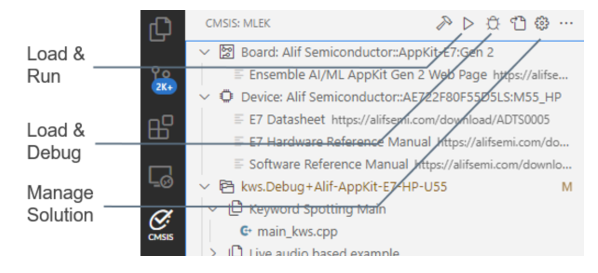
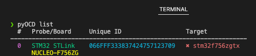
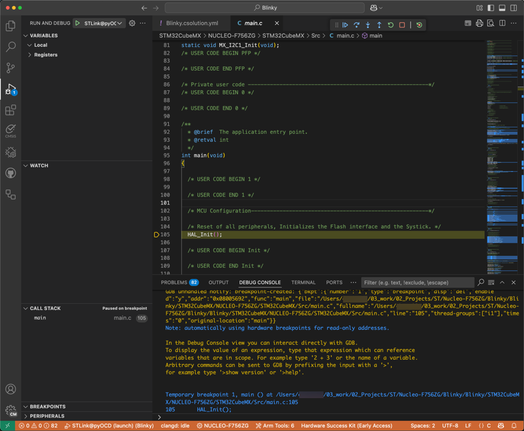

Debug the application
Debugging is an essential task for every embedded developer. The CMSIS View offers action buttons to start a debug session. The Run and Debug View lets you connect to the target.
Refer to the Arm CMSIS Debugger extension for a detailed description of debug features.
CMSIS View

The CMSIS View offers these action buttons:
- Load & Run a csolution application which downloads and starts the application images in the target.
- Load & Debug a csolution application which downloads the application images and starts the debugger.
- Manage Solution configures the debug setup with the
target-set:node. It also supports multiple configurations using aset:name.
The action button:
- Load & Run executes from
tasks.jsonthe commandCMSIS Load+Run. - Load & Debug executes from
launch.jsonthe first section with"request": "launch"andcmsis:. If this is not present it uses fromtasks.jsonthe commandCMSIS Load+Debug.
Further commands are available under ...:
- Load executes from
tasks.jsonthe commandCMSIS Load. - Erase executes from
tasks.jsonthe commandCMSIS Erase. - Run executes from
tasks.jsonthe commandCMSIS Run.
Run and Debug View
The Run and Debug View in VS Code connects to the target using the request selection shown below.

The CMSIS Solution extension handles multiple processor cores using one debug connection for each core.

Debug on hardware
Attention
Make sure that your project is set up correctly for run and debug.
Make sure that your target is connected, before loading the application onto it. You can use pyOCD to verify target
connectivity.
- Open a Terminal, and enter
pyOCD listto check attached hardware:  - In the Solution outline header, click
 . This executes the "load and debug"
command that flashes the project onto the target and starts a debug session.
. This executes the "load and debug"
command that flashes the project onto the target and starts a debug session.
Note
If you are using a multicore device and you did not specify a "processorName" in the launch.json file, select the
appropriate processor for your project in the Select a processor drop-down list at the top of the window.
The Run and Debug view displays and the debug session starts. The debugger stops at the main() function of the program:

The Debug Console tab displays the debugging output.